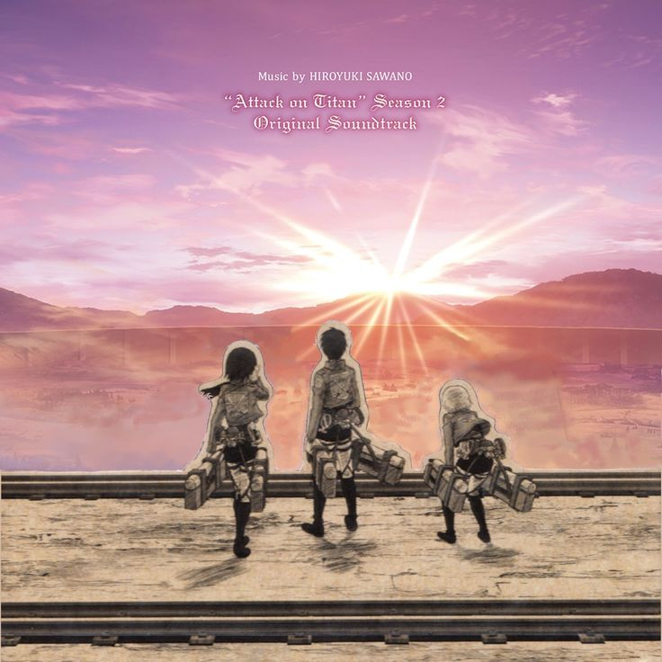
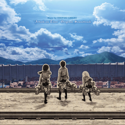

Attack on Titan Season 2 Soundtrack - Hiroyuki Sawano
This is the second soundtrack released on 7th June 2017 and continued by the same artist as the first release; Hiroyuki Sawano. Including well known songs from the series such as YouSeeBigGirl/T:T, Barricades, and 2Volt.
Artist/s:
- Hiroyuki Sawano
Tracklist:
Disc 1:
- Barricades - 3:41
- APETITAN - 5:31
- YouSeeBIGGIRL/T:T - 5:59
- son2seaVer - 5:21
- Call of Silence - 2:58
- ERENthe標 - 6:23
- attack音D - 4:44
- YAMANAIAME - 4:26
- 2Volt - 6:41
- 進撃st-hrn-egt20130629巨人 - 5:01
- So ist es immer - 4:49
- 進撃st-hrn-gt-pf20130629巨人 - 4:36
- ymniam-orch - 3:09
- The Reluctant Heroes - 4:29
- 進撃st-hrn-gt20130629巨人 - 4:12
- theDOGS - 4:35
Total Disc Length: 76:35

Disc 2:
- 進撃pf-medley20130629巨人 - 5:06
- EMAymniam - 5:30
- 進撃pf20130218巨人 - 4:41
- 進撃gt20130218巨人 - 2:31
- TWO-lives - 4:53
- 進撃st20130629巨人 - 5:24
- 進撃vn-pf20130524巨人 - 3:21
- ymniam-MKorch - 2:34
- 進撃pf-adlib-c20130218巨人 - 3:51
- 進撃pf-adlib-b20130218巨人 - 2:51
- 進撃vc-pf20130218巨人 - 6:11
- TheWeightOfLives - 7:18
- YAMANAIAME - 4:27
- AOTs2M他1 - 4:10
- AOTs2M他2 - 2:09
- AOTs2M他3 - 3:25
- AOTs2M他4 - 4:03
Total Disc Length: 72:25
Total Soundtrack Length: 2:29:00
____________________________________________
If you'd like to listen to this soundtrack on Spotify, click the spotify logo!

Page Shortcuts
